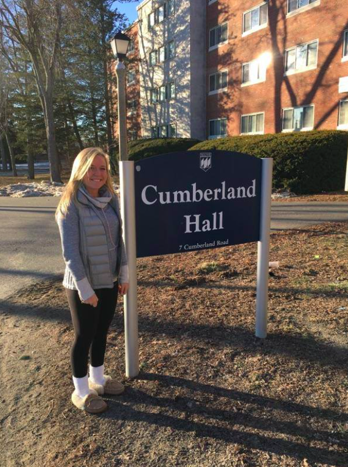

Homepage
Basic Facts About Me
My College Experience
My Favorite Place
My College Experience

My college experience is different than most people's. I started my first semester of college at
Roger Williams University in Bristol, Rhode Island. I loved that the school was on the ocean, but I
did not fit in with the people and the small school atmosphere. Around November I decided that I wanted
to transfer to the University of Maine. I am so grateful now that I made that decision, because I am happier
than I've ever been before here.